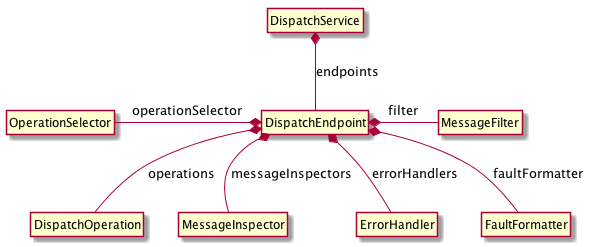

The base address for the endpoint.
The name of the service contract handled by the endpoint.
A list of error handlers for this endpoint.
The object responsible for formatting errors.
Filter used to identify a Message as available to be processed by the endpoint.
Indicates the priority of the endpoint if more than one endpoint can process the message. A higher value indicates a higher priority. If all endpoints have the same priority then the first matching endpoint is used.
Specifies whether to include the error message and stack trace in faults created from errors. This should not be turned on in production.
A list of message inspectors for this endpoint.
An object that chooses which DispatchOperation will be invoked for the Message.
A list of operations available for the endpoint.
A DispatchOperation which is invoked for the OperationSelector is unable to choose the appropriate DispatchOperation.
Returns the DispatchOperation that will be invoked for the Message.
The message.
Validates that the endpoint is correctly configured.
Generated using TypeDoc
Represents an endpoint for a service in the dispatcher. Exposes configuration options for the endpoint.
